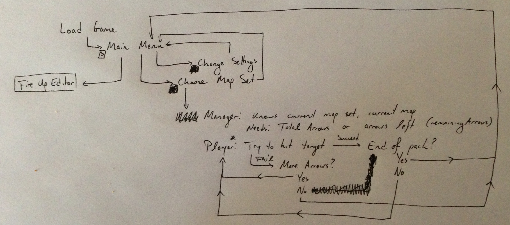
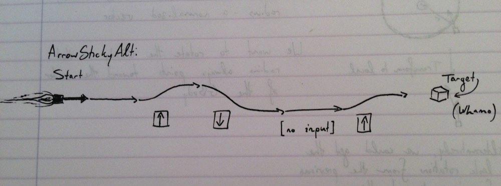

Space Archery Base Engine - Rev. 05
| Completed | Priority | Object | Model | Script |
|---|---|---|---|---|
| Yes | Critical | Setup Git + Github | None | None |
| Yes | Integral | Arrow | ArrowModel | Arrow.cs + ArrowAstAlt.cs + ArrowStickyAlt.cs |
| Partial | Integral | Player | PlayerModel | Bow.cs, Player.cs |
| Yes | Integral | Map | Skybox | None |
| Yes | Integral | Target | Cube | None; assign collider and “Target” tag |
| Partial | Integral | GravBody | Sphere | Gravity.cs + Wall.cs |
| Yes | Integral | Wormhole | Unity Primitive | Wormhole.cs |
| Partial | Integral | Unguided Missile | RocketModel w/ different texture | EnemyMissile.cs + EnemyMissileSpawner.cs |
| Yes | Integral | Guided Missile | RocketModel w/ different texture | SeekerMissile.cs |
| Yes | Integral | Wall | Unity Primitive | Wall.cs |
| Yes | Integral | Repulsor | Unity Primitive | Repulsor.cs |
| No | Integral | Wallpulsor | Combination of Wall and Repulsor | None |
| No | Integral | FollowCam | None, attached to Arrow | FollowCam.cs |
| Yes | Integral | HUD | None | HUD.cs |
| No | Non-Integral, Recommended | Main Menu | Unity Scene | MainMenu.cs |
| Partial | Integral | Three Base Levels | Unity Scene | None |
| Partial | Integral | Combo Levels | Unity Scene | None |
Further updates to be posted on 24 Oct. 2012
— Overall Game Flow — 
—Player Detail (Ingame) Flow —
Script Details
All classes need getters and possibly setters for the variables specified here. They should all handle variable mutation in methods that other classes can call. There should be no mutation being done by an outside class - everything needs to pass through the script in which the variables reside.
- Arrow.cs
- Contains arrow attributes
- Takes the player’s input:
- Up/Down controls the rocket’s angle of attack. Uses fuel.
- Space controls boost. Boost is active when depressed, inactive otherwise. Uses fuel.
- ArrowAstAlt.cs
- Alternate movement script - inherits from Arrow.cs. Based on Asteroids - style movement.
- ArrowStickyAlt.cs
- Another alternate movement script, closer to what Josh has envisioned for the final game. For this script, you’ll need to extend Arrow and override Move(). The control scheme itself centers on the idea that the arrow should always ‘want’ to move in the direction in which it was fired. The player should be able to ‘nudge’ the arrow up and down, but it’ll return to the centerline in between nudges. It’s crucial that the arrow can be rotated in any direction and continue as if it were fired in that direction, otherwise GBodies won’t be able to rotate the Arrow properly. So make sure this is rotation-independent. 
- Bow.cs
- This is a weapon script. It will be attached to the player prefab, not specifically instantiated. It needs to get mouse input to create a vector from the initial mouseDown vector to the final mouseDown vector, transform this vector to the player object, and instantiate an arrow at that position. Calls Player.DisableMovement() on firing an arrow.
- Player.cs
- Takes the player’s input:
- Up/Down moves the player up and down between certain bounds
- bool canMove is set to false by Bow after an Arrow is fired; this locks the player’s movement until GM.Reset() is called.
- Takes the player’s input:
- Gravity.cs
- This script dictates the behavior of a gravitational body in the game world. It attracts objects within a certain radius toward its center and destroys them upon contacting its surface. The model features green/yellow/red zones drawn radially around the object to indicate the strength of the gravitational pull at certain distances from the planet.
- Wall.cs
- Attached to a collider that interacts physically with objects i.e. GravBodies and Wall
- Calls Die() in any object that collides with the attached collider
- Target.cs
- Calls GM.TargetHit() if hit by the Arrow
- Wormhole.cs
- This script will be attached to the entrance of a wormhole object and will have a GameObject field to reference the exit object. Upon colliding with the wormhole entrance, the player will be teleported to the transform.position of the exit plus some offset (for our purposes, the wormhole objects will be spheres - use the radius for this offset).
- EnemyMissile.cs
- Contains float damage, the amount of damage this missile does on impact
- Moves the EnemyMissile forward along its axis a fixed amount each FixedUpdate()
- Call Arrow.TakeDamage(float damage) upon colliding with it (must search for the Arrow in the OnCollisionEnter() method, keeping an object ref won’t work) - pass in this EnemyMissile’s damage field.
- EnemyMissileSpawner.cs
- This script will go on an empty GO, which will then become an EnemyMissileSpawner. The script will need to instantiate EnemyMissiles in the direction of the spawner’s local x coordinate at random intervals. Start by implementing a fixed timer, and then add on a random functionality - design the code so that you can choose between a fixed or a random timer via the inspector (Use a public bool, then write the code to take that into accout). Have two class fields (also exposed to the inspector) that vary the times which can be randomly picked (Mathf.Random.Range(float min, float max)). Remember to count down to zero using Time.deltaTime, not up to infinity.
- Contains a field bool isGuided which is true if this spawner shoots guided missiles, false otherwise
- Create a method SpawnMissile() that Instantiates an EnemyMissile/SeekerMissile based on the value of isGuided in the direction of the spawner’s local +x coordinate.
- In Update(), implement the randomized timer described above. When the timer reaches zero, call SpawnEnemyMissile(), then reset the timer to a new amount.
- Repulsor.cs
- Attached to a trigger GO; adds a constant force in the direction of the transform’s positive x axis to any object within the trigger bounds.
- Wallpulsor
- Combination of Repulsor and Wall objects; Repulsor on the +y side with its +x axis facing out, Wall on the -y side with its +x axis facing out.
- FollowCam.cs
- Attached to the Arrow. Creates a second camera centered above the arrow which then follows the Arrow’s transform.position plus a public float followDist in the z direction (currently –5.0f).
- Depressing [hotkey] switches to the main camera of the whole level, releasing switches back to the FollowCam. Use any hotkey for development, make sure you note it in the header comments.
- HUD.cs
- This script will display certain fields of RocketAttributes.cs to the player via GUI textboxes. See here for a good, simple approach to drawing a health bar. For this iteration we will need two bars, one to display fuel and one to display health.
- MainMenu.cs
- This script will be attached to a Unity Scene that contains the the game title, credits, and buttons for each level that we have. See here and here for some good guides on setting up menus using Unity’s built-in elements. Consider implementing the pause menu from the UnityCookie tutorial if you feel you’ve got the time and the understanding.
Object Details
All objects aside from Arrow and Player will be Unity primitives. Rocket and Player will be built as such:
- Object (Empty GO) - Scripts attached here
- ObjectModel
Comms
The target will communicate to the game manager when it’s been hit, and the rocket will do the same if it runs off the board and is destroyed. The game manager will then reset the game. Bow specifically instantiates the arrow upon releasing the mouse button. Enemy rockets will damage the arrow, and the arrow will destroy itself in the case that it has no health/fuel, informing the game manager to reset the game.